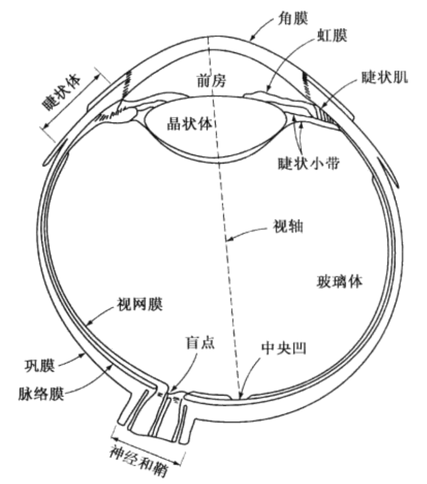
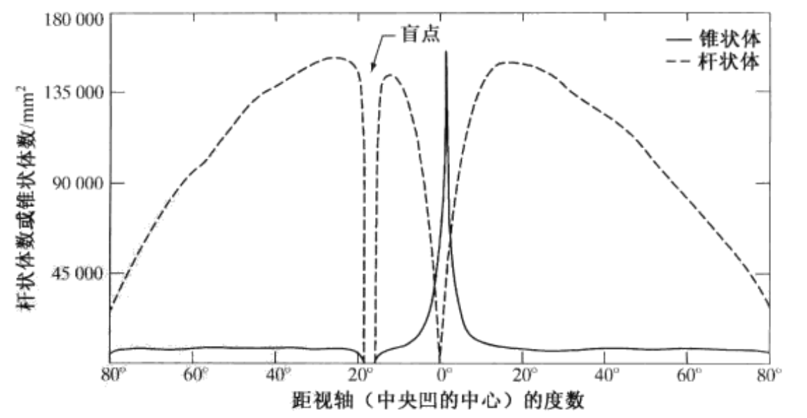
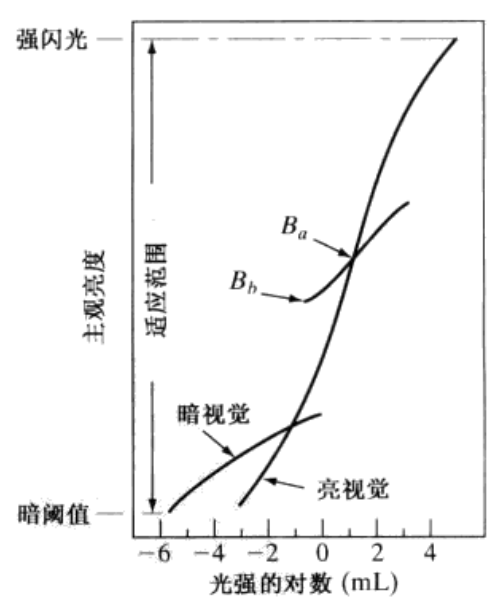
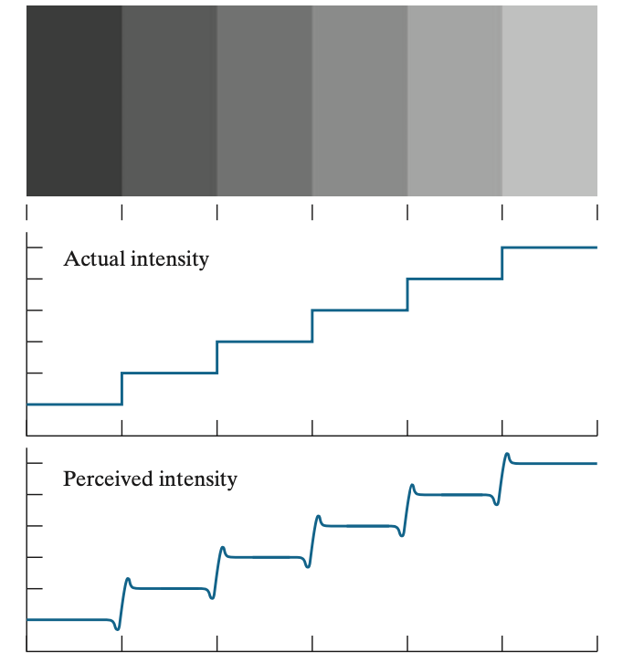
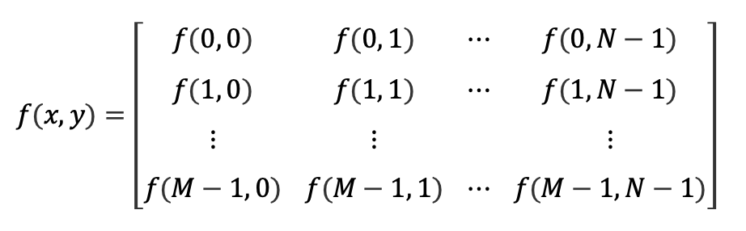
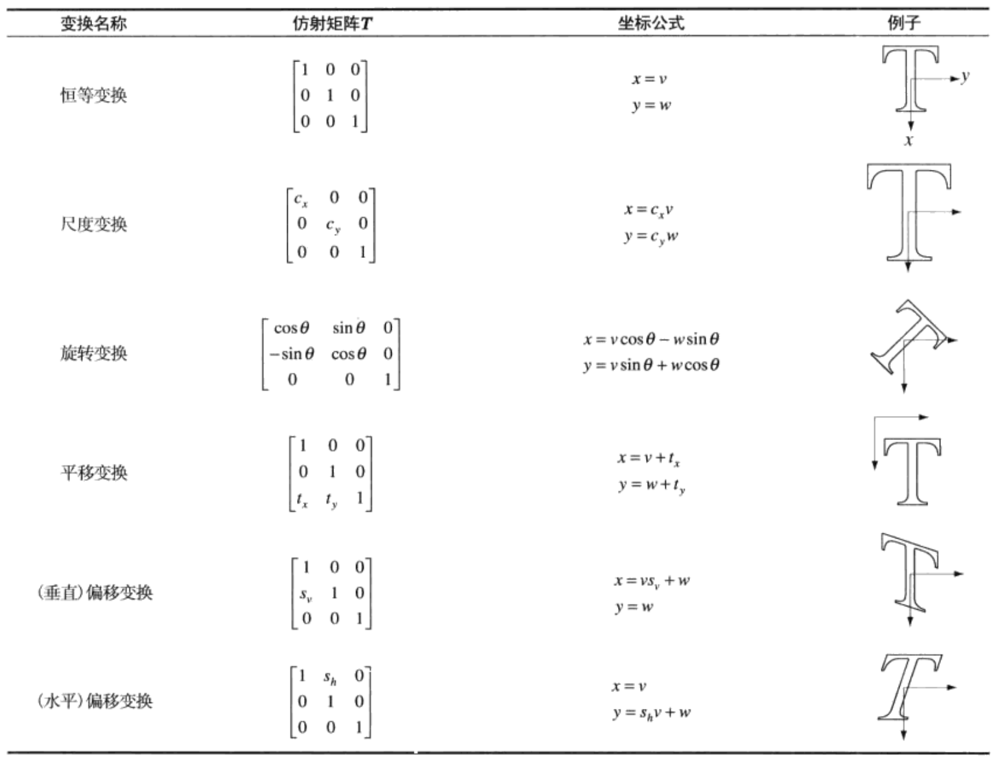
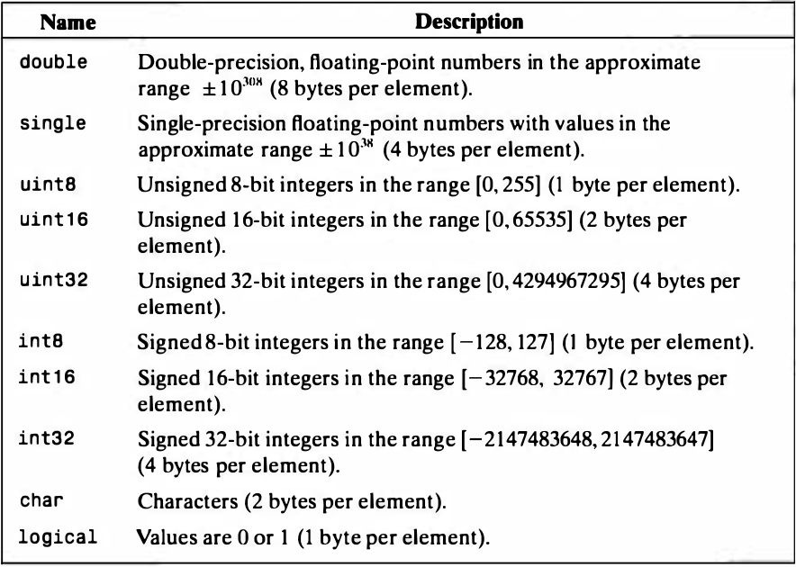
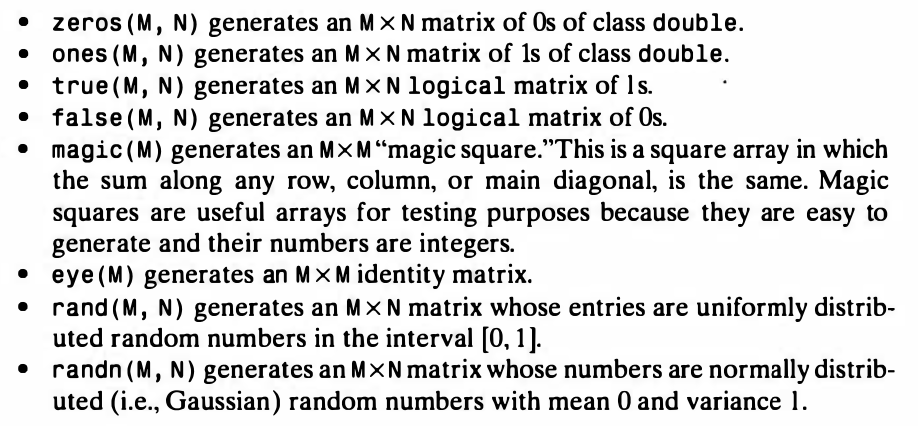

<!DOCTYPE html>
<html>
<head><meta name="generator" content="Hexo 3.8.0">
  <!-- hexo-inject:begin --><!-- hexo-inject:end --><meta charset="utf-8">
  

  
  <title>数字图像处理基础与相关操作的matlab基础 | DongXuehui&#39;s Blog</title>
  <meta name="viewport" content="width=device-width, initial-scale=1, maximum-scale=1">
  <meta name="description" content="数字图像处理基础与相关操作的matlab基础一 数字图像基础人眼中的光感受器及特点人眼中有两类光感受器：锥状体和杆状体  锥状体：每只眼睛中，锥状体的数量在600～700万之间，主要位于视网膜的中间部分，称之为中央凹，对颜色高度敏感；这些锥状体可以帮助充分地分辨图像的细节，每个锥状体都连接到各自的神经末梢。当肌肉控制眼球转动时，知道感兴趣的物体图像落在中央凹上。锥状体视觉称为白昼视觉或亮视觉。 杆">
<meta name="keywords" content="数字图像处理">
<meta property="og:type" content="article">
<meta property="og:title" content="数字图像处理基础与相关操作的matlab基础">
<meta property="og:url" content="http://dongxh.cn/2020/03/16/数字图像处理基础与相关操作的matlab基础/index.html">
<meta property="og:site_name" content="DongXuehui&#39;s Blog">
<meta property="og:description" content="数字图像处理基础与相关操作的matlab基础一 数字图像基础人眼中的光感受器及特点人眼中有两类光感受器：锥状体和杆状体  锥状体：每只眼睛中，锥状体的数量在600～700万之间，主要位于视网膜的中间部分，称之为中央凹，对颜色高度敏感；这些锥状体可以帮助充分地分辨图像的细节，每个锥状体都连接到各自的神经末梢。当肌肉控制眼球转动时，知道感兴趣的物体图像落在中央凹上。锥状体视觉称为白昼视觉或亮视觉。 杆">
<meta property="og:locale" content="zh-CN">
<meta property="og:image" content="http://dongxh.cn/2020/03/16/数字图像处理基础与相关操作的matlab基础/1.png">
<meta property="og:image" content="http://dongxh.cn/2020/03/16/数字图像处理基础与相关操作的matlab基础/2.png">
<meta property="og:image" content="http://dongxh.cn/2020/03/16/数字图像处理基础与相关操作的matlab基础/3.png">
<meta property="og:image" content="http://dongxh.cn/2020/03/16/数字图像处理基础与相关操作的matlab基础/4.png">
<meta property="og:image" content="http://dongxh.cn/2020/03/16/数字图像处理基础与相关操作的matlab基础/5.png">
<meta property="og:image" content="http://dongxh.cn/2020/03/16/数字图像处理基础与相关操作的matlab基础/6.png">
<meta property="og:image" content="http://dongxh.cn/2020/03/16/数字图像处理基础与相关操作的matlab基础/7.png">
<meta property="og:image" content="http://dongxh.cn/2020/03/16/数字图像处理基础与相关操作的matlab基础/8.png">
<meta property="og:image" content="http://dongxh.cn/2020/03/16/数字图像处理基础与相关操作的matlab基础/9.png">
<meta property="og:updated_time" content="2020-04-04T04:56:30.594Z">
<meta name="twitter:card" content="summary">
<meta name="twitter:title" content="数字图像处理基础与相关操作的matlab基础">
<meta name="twitter:description" content="数字图像处理基础与相关操作的matlab基础一 数字图像基础人眼中的光感受器及特点人眼中有两类光感受器：锥状体和杆状体  锥状体：每只眼睛中，锥状体的数量在600～700万之间，主要位于视网膜的中间部分，称之为中央凹，对颜色高度敏感；这些锥状体可以帮助充分地分辨图像的细节，每个锥状体都连接到各自的神经末梢。当肌肉控制眼球转动时，知道感兴趣的物体图像落在中央凹上。锥状体视觉称为白昼视觉或亮视觉。 杆">
<meta name="twitter:image" content="http://dongxh.cn/2020/03/16/数字图像处理基础与相关操作的matlab基础/1.png">
  
    <link rel="alternate" href="/atom.xml" title="DongXuehui&#39;s Blog" type="application/atom+xml">
  
  
    <link rel="icon" href="/favicon.png">
  
  
    <link href="//fonts.googleapis.com/css?family=Source+Code+Pro" rel="stylesheet" type="text/css">
  
  <link rel="stylesheet" href="/css/style.css"><!-- hexo-inject:begin --><!-- hexo-inject:end -->
</head>
</html>
<body>
  <!-- hexo-inject:begin --><!-- hexo-inject:end --><div id="container">
    <div id="wrap">
      <header id="header">
  <div id="banner"></div>
  <div id="header-outer" class="outer">
    <div id="header-title" class="inner">
      <h1 id="logo-wrap">
        <a href="/" id="logo">DongXuehui&#39;s Blog</a>
      </h1>
      
    </div>
    <div id="header-inner" class="inner">
      <nav id="main-nav">
        <a id="main-nav-toggle" class="nav-icon"></a>
        
          <a class="main-nav-link" href="/">Home</a>
        
          <a class="main-nav-link" href="/archives">Archives</a>
        
      </nav>
      <nav id="sub-nav">
        
          <a id="nav-rss-link" class="nav-icon" href="/atom.xml" title="RSS Feed"></a>
        
        <a id="nav-search-btn" class="nav-icon" title="搜索"></a>
      </nav>
      <div id="search-form-wrap">
        <form action="//google.com/search" method="get" accept-charset="UTF-8" class="search-form"><input type="search" name="q" class="search-form-input" placeholder="Search"><button type="submit" class="search-form-submit">&#xF002;</button><input type="hidden" name="sitesearch" value="http://dongxh.cn"></form>
      </div>
    </div>
  </div>
</header>
      <div class="outer">
        <section id="main"><article id="post-数字图像处理基础与相关操作的matlab基础" class="article article-type-post" itemscope itemprop="blogPost">
  <div class="article-meta">
    <a href="/2020/03/16/数字图像处理基础与相关操作的matlab基础/" class="article-date">
  <time datetime="2020-03-16T14:56:53.000Z" itemprop="datePublished">2020-03-16</time>
</a>
    
  <div class="article-category">
    <a class="article-category-link" href="/categories/Digital-Image-Process/">Digital Image Process</a>
  </div>

  </div>
  <div class="article-inner">
    
    
      <header class="article-header">
        
  
    <h1 class="article-title" itemprop="name">
      数字图像处理基础与相关操作的matlab基础
    </h1>
  

      </header>
    
    <div class="article-entry" itemprop="articleBody">
      
        <h1 id="数字图像处理基础与相关操作的matlab基础"><a href="#数字图像处理基础与相关操作的matlab基础" class="headerlink" title="数字图像处理基础与相关操作的matlab基础"></a>数字图像处理基础与相关操作的matlab基础</h1><h2 id="一-数字图像基础"><a href="#一-数字图像基础" class="headerlink" title="一 数字图像基础"></a>一 数字图像基础</h2><h3 id="人眼中的光感受器及特点"><a href="#人眼中的光感受器及特点" class="headerlink" title="人眼中的光感受器及特点"></a>人眼中的光感受器及特点</h3><p>人眼中有两类光感受器：锥状体和杆状体</p>
<p></p>
<p><strong>锥状体</strong>：每只眼睛中，锥状体的数量在600～700万之间，主要位于视网膜的中间部分，称之为<strong>中央凹</strong>，<strong><em>对颜色高度敏感</em></strong>；这些锥状体可以帮助充分地分辨图像的细节，每个锥状体都连接到各自的神经末梢。当肌肉控制眼球转动时，知道感兴趣的物体图像落在中央凹上。锥状体视觉称为<strong>白昼视觉</strong>或<strong>亮视觉</strong>。</p>
<p><strong>杆状体</strong>：每只眼睛约有7500～15000万个杆状体分布在视网膜表面，几个杆状体连接一个神经末梢；杆状体用来<strong>给出视野内一般的总体图像，没有彩色感觉，而对低照明强度敏感</strong>。杆状体视觉称为<strong>微光视觉</strong>或<strong>暗视觉</strong>。</p>
<p>下图给出了右眼通过光感神经区的剖面的杆状体和锥状体密度。特别注意盲点处没有传感器。</p>
<p></p>
<h3 id="人眼的亮度适应和辨别"><a href="#人眼的亮度适应和辨别" class="headerlink" title="人眼的亮度适应和辨别"></a>人眼的亮度适应和辨别</h3><p>人的视觉系统能够适应的光强度级别范围时很宽的——从暗阈值到强闪光约有10^10^范围的量级。</p>
<p>主观亮度 subjective brightness（即由人的视觉系统<strong>感知</strong>的亮度）是进入人眼的光强的对数函数。</p>
<p></p>
<p>在亮视觉和暗视觉下，光强和主观亮度对应的函数关系由上图可以清晰表明；视觉系统不能够同时在一个范围内工作，确切地说，是通过改变整个灵敏度（B~b~和B~a~所在的一小段曲线）来完成这一变动，这称为<strong>亮度适应现象</strong>。</p>
<p>视觉系统的当前灵敏度级别称为亮度适应级别。</p>
<p><strong>感知亮度不是简单的光强度的函数</strong>！</p>
<p>举例两种现象：</p>
<ol>
<li><strong>马赫带</strong> <em>Mach bands</em>    即视觉系统在不同强度区域的边界会出现“上冲”或者“下冲”现象。</li>
<li><strong>同时对比</strong> <em>simultaneous contrast</em>     即感知区域的亮度（即感知亮度）并不简单地取决于其强度</li>
</ol>
<p></p>
<p>错觉也是人类视觉系统的一种特性；</p>
<h3 id="图像表示与取样量化"><a href="#图像表示与取样量化" class="headerlink" title="图像表示与取样量化"></a>图像表示与取样量化</h3><p>​    简单的图像形成模型：$f(x,y)=i(x,y)r(x,y)$ ，其中$0&lt;i(x,y)&lt;\infty$表示入射系数，$0&lt;r(x,y)&lt;1$表示反射系数。有时候如胸透X射线照片，$r(x,y)$表示透射系数。</p>
<p>​    单色图像在任何坐标$(x_0,y_0)$处的强度（灰度）表示为$l=f(x_0,y_0)$，其中$L_{min}\leqslant l\leqslant L_{max}$，区间$[L_{min},L_{max}]$称为灰度值（强度级）。</p>
<p>​    一幅图像在计算机里一般以矩阵的形式表示出来，一个像素用矩阵中的一个元素表示，元素数值的大小表示了该像素点的强度级，或者说灰度值。下图为一个$M\times N$的图像矩阵：</p>
<p></p>
<p>对于单色unit8图像来说，灰度值的范围为$[0,255]$。</p>
<p>存储一幅图片的需要的大小为每个像素所要的比特数乘上像素个数，单位为bit。</p>
<h4 id="空间和灰度分辨率"><a href="#空间和灰度分辨率" class="headerlink" title="空间和灰度分辨率"></a>空间和灰度分辨率</h4><p>空间分辨率是指图像中可辨别的最小细节的度量。有很多种度量方法，其中最通用的是<em>每单位距离线对数和每单位距离点数（像素数）</em>。常见的单位如<strong>dpi</strong>指的是每英寸点数。</p>
<p>灰度分辨率是指灰度级中可分辨的最小变化。</p>
<h3 id="像素之间的基本关系"><a href="#像素之间的基本关系" class="headerlink" title="像素之间的基本关系"></a>像素之间的基本关系</h3><p>基本概念：</p>
<ul>
<li>（对于像素来说）领域：分为$N_4(p)$ 4领域，$N_8(p)$ 8领域，$N_D(p)$ 对角领域</li>
<li>（此条及以下是对于像素集合来说）$V$是用于定义邻接性的灰度值集合。</li>
<li>邻接：4邻接，8邻接，m邻接（混合邻接）</li>
<li>连通性</li>
<li>区域</li>
<li>边界</li>
</ul>
<p>距离度量：</p>
<ul>
<li>欧式距离$D_e$</li>
<li>城市街区距离$D_4$</li>
<li>棋盘距离$D_8$</li>
</ul>
<h3 id="图像的仿射变换"><a href="#图像的仿射变换" class="headerlink" title="图像的仿射变换"></a>图像的仿射变换</h3><p></p>
<h2 id="二-相关Matlab操作基础"><a href="#二-相关Matlab操作基础" class="headerlink" title="二 相关Matlab操作基础"></a>二 相关Matlab操作基础</h2><h3 id="基本操作"><a href="#基本操作" class="headerlink" title="基本操作"></a>基本操作</h3><p>Coordinate convention in Image Processing Toolbox:    (r,c)    from 1 to number of rows/columns</p>
<p>(Less frequently) spatial coordinate:x for columns ,and y for rows.</p>
<figure class="highlight matlab"><table><tr><td class="gutter"><pre><span class="line">1</span><br><span class="line">2</span><br><span class="line">3</span><br><span class="line">4</span><br><span class="line">5</span><br><span class="line">6</span><br><span class="line">7</span><br><span class="line">8</span><br><span class="line">9</span><br><span class="line">10</span><br><span class="line">11</span><br><span class="line">12</span><br><span class="line">13</span><br><span class="line">14</span><br><span class="line">15</span><br><span class="line">16</span><br><span class="line">17</span><br><span class="line">18</span><br><span class="line">19</span><br><span class="line">20</span><br><span class="line">21</span><br><span class="line">22</span><br><span class="line">23</span><br><span class="line">24</span><br><span class="line">25</span><br><span class="line">26</span><br><span class="line">27</span><br></pre></td><td class="code"><pre><span class="line">f = imread(<span class="string">'filename'</span>);</span><br><span class="line"><span class="built_in">size</span>(f);</span><br><span class="line"></span><br><span class="line">[D1'D2,...<span class="string">'DK] = size(A);</span></span><br><span class="line"><span class="string"></span></span><br><span class="line"><span class="string">size(A, 1);%give the size of f along its first dimension</span></span><br><span class="line"><span class="string"></span></span><br><span class="line"><span class="string">%%%display image%%%</span></span><br><span class="line"><span class="string">imshow(f);</span></span><br><span class="line"><span class="string">imshow(f, [low high]);%将所有小于或等于low的值显示为黑色,将所有大于或等于high的值显示为白色,中间的值显示为中间强度值。</span></span><br><span class="line"><span class="string">imshow(f, []);%sets variable low to the minimum value of array f and high to its maximum value.</span></span><br><span class="line"><span class="string">imtool(f);</span></span><br><span class="line"><span class="string"></span></span><br><span class="line"><span class="string"></span></span><br><span class="line"><span class="string">%%%wirting Images%%%</span></span><br><span class="line"><span class="string">imwrite(f, '</span>filename');</span><br><span class="line">imwrite(f, <span class="string">'filename.jpg'</span> , <span class="string">'quality'</span> , q);<span class="comment">%the lower the number the higher the degradation due to JPEG compression</span></span><br><span class="line">imfinfo filename;</span><br><span class="line"></span><br><span class="line">K = imfinfo(<span class="string">'bubbles25.jpg'</span>);<span class="comment">% structure variable </span></span><br><span class="line">image_bytes = K.Width*K.Height*K.BitDepth/<span class="number">8</span>;</span><br><span class="line">compressed_bytes = K.FileSize;</span><br><span class="line">compression_ratio = image_bytes/compressed_bytes</span><br><span class="line">compression_ratio <span class="number">35</span> . <span class="number">1</span> <span class="number">6</span> <span class="number">1</span> <span class="number">2</span></span><br><span class="line"></span><br><span class="line"><span class="comment">%%%converting Classes%%%</span></span><br><span class="line">B = class_name(A);</span><br></pre></td></tr></table></figure>
<p></p>
<p>More detail at P28~P33 of <em>DIP Using Matlab</em>.</p>
<p><strong>operation (A, dim)</strong></p>
<p>​    该形式的语句返回A中第dim维度的信息（具体取决于operation是什么）</p>
<figure class="highlight matlab"><table><tr><td class="gutter"><pre><span class="line">1</span><br><span class="line">2</span><br><span class="line">3</span><br><span class="line">4</span><br><span class="line">5</span><br><span class="line">6</span><br><span class="line">7</span><br></pre></td><td class="code"><pre><span class="line">d = <span class="built_in">ndims</span>(A);<span class="comment">%gives the number of dimensions of array A,标量被认为1*1的矩阵</span></span><br><span class="line"></span><br><span class="line"><span class="comment">%%%Sparse Matrices稀疏矩阵%%%</span></span><br><span class="line">S = sparse(A);<span class="comment">%by squeezing out all the zeroes</span></span><br><span class="line">Original = full(S);<span class="comment">%recover the original (full) matrix</span></span><br><span class="line"></span><br><span class="line">S = sparse(r, c, s, m, n);<span class="comment">%r for rows,c for columns,s for values,m for M,n for N</span></span><br></pre></td></tr></table></figure>
<p></p>
<p>magic(M),幻方矩阵；</p>
<p>eye(M),单位矩阵；</p>
<p>rand(M,N),在[0,1]均匀分布的随机矩阵；</p>
<p>randn(M,N),均值为0、方差为1的正态分布的随机矩阵；</p>
<p><strong>Function Handles</strong>(函数句柄)</p>
<p><strong>创建函数句柄</strong></p>
<p><strong>匿名函数</strong></p>
<p>您可以创建指向匿名函数的句柄。匿名函数是基于单行表达式的 MATLAB 函数，不需要程序文件。构造指向匿名函数的句柄，方法是定义 <code>anonymous_function</code> 函数主体，以及指向匿名函数 <code>arglist</code> 的以逗号分隔的输入参数列表。语法为：</p>
<figure class="highlight matlab"><table><tr><td class="gutter"><pre><span class="line">1</span><br></pre></td><td class="code"><pre><span class="line">h = @(arglist)anonymous_function;</span><br></pre></td></tr></table></figure>
<p>注意循环的优化</p>
<p><strong>Cell arrays</strong>(元胞数组)</p>
<figure class="highlight matlab"><table><tr><td class="gutter"><pre><span class="line">1</span><br><span class="line">2</span><br><span class="line">3</span><br><span class="line">4</span><br><span class="line">5</span><br><span class="line">6</span><br><span class="line">7</span><br><span class="line">8</span><br><span class="line">9</span><br><span class="line">10</span><br><span class="line">11</span><br><span class="line">12</span><br><span class="line">13</span><br><span class="line">14</span><br><span class="line">15</span><br><span class="line">16</span><br><span class="line">17</span><br><span class="line">18</span><br><span class="line">19</span><br></pre></td><td class="code"><pre><span class="line">C = &#123;f, b, char_array&#125;;</span><br><span class="line">&gt;&gt; C</span><br><span class="line">C=</span><br><span class="line">	[<span class="number">512</span>x512 uint8] [<span class="number">188</span>x2 double] &#123;<span class="number">1</span>x2 cell&#125;</span><br><span class="line">	</span><br><span class="line">&gt;&gt; C&#123;<span class="number">3</span>&#125; <span class="comment">%see the content</span></span><br><span class="line"><span class="built_in">ans</span> =</span><br><span class="line">   <span class="string">' area '</span> <span class="string">' centroid '</span></span><br><span class="line">   </span><br><span class="line">&gt;&gt; C(<span class="number">3</span>) <span class="comment">%see the discription</span></span><br><span class="line"><span class="built_in">ans</span> =</span><br><span class="line">		&#123;<span class="number">1</span>x2 cell&#125;</span><br><span class="line">		</span><br><span class="line">&gt;&gt; f = C&#123;<span class="number">1</span>&#125;; <span class="comment">% extract f from C</span></span><br><span class="line"></span><br><span class="line"></span><br><span class="line"><span class="comment">%%%重要！！！！%%%%</span></span><br><span class="line"></span><br><span class="line">D = <span class="built_in">cellfun</span>(<span class="string">'function_name'</span>, C);<span class="comment">%D的每个元素都包含function_name返回的C中对应元素的值</span></span><br></pre></td></tr></table></figure>
<h3 id="代码优化"><a href="#代码优化" class="headerlink" title="代码优化"></a>代码优化</h3><p><strong>向量化循环</strong></p>
<figure class="highlight matlab"><table><tr><td class="gutter"><pre><span class="line">1</span><br><span class="line">2</span><br><span class="line">3</span><br><span class="line">4</span><br><span class="line">5</span><br><span class="line">6</span><br><span class="line">7</span><br><span class="line">8</span><br><span class="line">9</span><br><span class="line">10</span><br><span class="line">11</span><br><span class="line">12</span><br><span class="line">13</span><br><span class="line">14</span><br><span class="line">15</span><br><span class="line">16</span><br><span class="line">17</span><br><span class="line">18</span><br><span class="line">19</span><br><span class="line">20</span><br><span class="line">21</span><br><span class="line">22</span><br><span class="line">23</span><br><span class="line">24</span><br><span class="line">25</span><br><span class="line">26</span><br><span class="line">27</span><br><span class="line">28</span><br><span class="line">29</span><br><span class="line">30</span><br></pre></td><td class="code"><pre><span class="line"><span class="comment">%%%一维索引 举例说明%%%</span></span><br><span class="line"><span class="comment">%%%未优化代码%%%</span></span><br><span class="line"><span class="keyword">for</span> x = <span class="number">1</span>:M</span><br><span class="line">	f(x) = A*<span class="built_in">sin</span>((x<span class="number">-1</span>)/(<span class="number">2</span>*<span class="built_in">pi</span>));</span><br><span class="line"><span class="keyword">end</span></span><br><span class="line"><span class="comment">%%%%%%%%%%%%%%</span></span><br><span class="line"><span class="comment">%%%优化后代码%%%</span></span><br><span class="line">x = <span class="number">0</span>:M<span class="number">-1</span>;</span><br><span class="line">f = A*<span class="built_in">sin</span>(x/(<span class="number">2</span>*<span class="built_in">pi</span>));</span><br><span class="line"><span class="comment">%%%%%%%%%%%%%%</span></span><br><span class="line"></span><br><span class="line"><span class="comment">%%%二维介绍函数%%%%%%%</span></span><br><span class="line">c = [<span class="number">0</span> <span class="number">1</span>];</span><br><span class="line">r = [<span class="number">0</span> <span class="number">1</span> <span class="number">2</span>];</span><br><span class="line">[C,R] = <span class="built_in">meshgrid</span>(c,r);</span><br><span class="line">&gt;&gt;</span><br><span class="line">	C = </span><br><span class="line">			<span class="number">0</span> <span class="number">1</span></span><br><span class="line">			<span class="number">0</span> <span class="number">1</span></span><br><span class="line">			<span class="number">0</span> <span class="number">1</span></span><br><span class="line">	R = </span><br><span class="line">			<span class="number">0</span> <span class="number">0</span></span><br><span class="line">			<span class="number">1</span> <span class="number">1</span></span><br><span class="line">			<span class="number">2</span> <span class="number">2</span></span><br><span class="line">&gt;&gt;h = R.^<span class="number">2</span> + C.^<span class="number">2</span></span><br><span class="line">	h = </span><br><span class="line">			<span class="number">0</span> <span class="number">1</span></span><br><span class="line">			<span class="number">1</span> <span class="number">2</span></span><br><span class="line">			<span class="number">4</span> <span class="number">5</span></span><br><span class="line"><span class="comment">%%%%%%%%%%%%%%%%%%</span></span><br></pre></td></tr></table></figure>
<p><strong>预分配数组</strong></p>
<p>加快代码执行时间的另一种方式就是在程序中预分配数组的大小</p>
<p>例如我们准备创建一个1024X1024大小的图像时，输入一下语句预处理：</p>
<figure class="highlight matlab"><table><tr><td class="gutter"><pre><span class="line">1</span><br></pre></td><td class="code"><pre><span class="line">f = <span class="built_in">zeros</span>(<span class="number">1024</span>);</span><br></pre></td></tr></table></figure>

      
    </div>
    <footer class="article-footer">
      <a data-url="http://dongxh.cn/2020/03/16/数字图像处理基础与相关操作的matlab基础/" data-id="ckjcmdb7o000603lk60zt5uug" class="article-share-link">Share</a>
      
      
  <ul class="article-tag-list"><li class="article-tag-list-item"><a class="article-tag-list-link" href="/tags/数字图像处理/">数字图像处理</a></li></ul>

    </footer>
  </div>
  
    
<nav id="article-nav">
  
    <a href="/2020/03/17/空间域的图像增强/" id="article-nav-newer" class="article-nav-link-wrap">
      <strong class="article-nav-caption">Newer</strong>
      <div class="article-nav-title">
        
          空间域的图像增强
        
      </div>
    </a>
  
  
    <a href="/2019/08/15/Skydiving-in-the-Skydive-Golden-Gate/" id="article-nav-older" class="article-nav-link-wrap">
      <strong class="article-nav-caption">Older</strong>
      <div class="article-nav-title">Skydiving in the Skydive Golden Gate</div>
    </a>
  
</nav>

  
</article>

</section>
        
          <aside id="sidebar">
  
    
  <div class="widget-wrap">
    <h3 class="widget-title">分类</h3>
    <div class="widget">
      <ul class="category-list"><li class="category-list-item"><a class="category-list-link" href="/categories/Digital-Image-Process/">Digital Image Process</a></li><li class="category-list-item"><a class="category-list-link" href="/categories/Linux/">Linux</a></li><li class="category-list-item"><a class="category-list-link" href="/categories/Operating-System/">Operating System</a></li><li class="category-list-item"><a class="category-list-link" href="/categories/life-record/">life record</a></li><li class="category-list-item"><a class="category-list-link" href="/categories/linear-algebra/">linear algebra</a></li></ul>
    </div>
  </div>


  
    
  <div class="widget-wrap">
    <h3 class="widget-title">标签</h3>
    <div class="widget">
      <ul class="tag-list"><li class="tag-list-item"><a class="tag-list-link" href="/tags/life-record/">life record</a></li><li class="tag-list-item"><a class="tag-list-link" href="/tags/linear-algebra/">linear algebra</a></li><li class="tag-list-item"><a class="tag-list-link" href="/tags/linux/">linux</a></li><li class="tag-list-item"><a class="tag-list-link" href="/tags/python3/">python3</a></li><li class="tag-list-item"><a class="tag-list-link" href="/tags/操作系统/">操作系统</a></li><li class="tag-list-item"><a class="tag-list-link" href="/tags/数字图像处理/">数字图像处理</a></li></ul>
    </div>
  </div>


  
    
  <div class="widget-wrap">
    <h3 class="widget-title">标签云</h3>
    <div class="widget tagcloud">
      <a href="/tags/life-record/" style="font-size: 10px;">life record</a> <a href="/tags/linear-algebra/" style="font-size: 10px;">linear algebra</a> <a href="/tags/linux/" style="font-size: 13.33px;">linux</a> <a href="/tags/python3/" style="font-size: 10px;">python3</a> <a href="/tags/操作系统/" style="font-size: 20px;">操作系统</a> <a href="/tags/数字图像处理/" style="font-size: 16.67px;">数字图像处理</a>
    </div>
  </div>

  
    
  <div class="widget-wrap">
    <h3 class="widget-title">归档</h3>
    <div class="widget">
      <ul class="archive-list"><li class="archive-list-item"><a class="archive-list-link" href="/archives/2020/12/">十二月 2020</a></li><li class="archive-list-item"><a class="archive-list-link" href="/archives/2020/04/">四月 2020</a></li><li class="archive-list-item"><a class="archive-list-link" href="/archives/2020/03/">三月 2020</a></li><li class="archive-list-item"><a class="archive-list-link" href="/archives/2019/08/">八月 2019</a></li><li class="archive-list-item"><a class="archive-list-link" href="/archives/2019/03/">三月 2019</a></li></ul>
    </div>
  </div>


  
    
  <div class="widget-wrap">
    <h3 class="widget-title">最新文章</h3>
    <div class="widget">
      <ul>
        
          <li>
            <a href="/2020/12/31/迭代器和生成器讲解/">迭代器和生成器讲解</a>
          </li>
        
          <li>
            <a href="/2020/04/30/OS-同步、通信与死锁（1）-并发进程/">OS--同步、通信与死锁（1）_并发进程</a>
          </li>
        
          <li>
            <a href="/2020/04/23/OS-处理器管理（5）-处理器调度/">OS--处理器管理（5）_处理器调度</a>
          </li>
        
          <li>
            <a href="/2020/04/03/OS-处理器管理（4）-线程及其实现/">OS--处理器管理（4）_线程及其实现</a>
          </li>
        
          <li>
            <a href="/2020/04/02/OS-处理器管理（3）-进程及其实现/">OS--处理器管理（3）_进程及其实现</a>
          </li>
        
      </ul>
    </div>
  </div>

  
</aside>
        
      </div>
      <footer id="footer">
  
  <div class="outer">
    <div id="footer-info" class="inner">
      &copy; 2020 dwyane_dongxh<br>
      Powered by <a href="http://hexo.io/" target="_blank">Hexo</a>
    </div>
  </div>
</footer>
    </div>
    <nav id="mobile-nav">
  
    <a href="/" class="mobile-nav-link">Home</a>
  
    <a href="/archives" class="mobile-nav-link">Archives</a>
  
</nav>
    

<script src="//ajax.googleapis.com/ajax/libs/jquery/2.0.3/jquery.min.js"></script>


  <link rel="stylesheet" href="/fancybox/jquery.fancybox.css">
  <script src="/fancybox/jquery.fancybox.pack.js"></script>


<script src="/js/script.js"></script>


  </div><!-- hexo-inject:begin --><!-- Begin: Injected MathJax -->
<script type="text/x-mathjax-config">
  MathJax.Hub.Config({"tex2jax":{"inlineMath":[["$","$"],["\\(","\\)"]],"skipTags":["script","noscript","style","textarea","pre","code"],"processEscapes":true},"TeX":{"equationNumbers":{"autoNumber":"AMS"}}});
</script>

<script type="text/x-mathjax-config">
  MathJax.Hub.Queue(function() {
    var all = MathJax.Hub.getAllJax(), i;
    for(i=0; i < all.length; i += 1) {
      all[i].SourceElement().parentNode.className += ' has-jax';
    }
  });
</script>

<script type="text/javascript" src="https://cdnjs.cloudflare.com/ajax/libs/mathjax/2.7.1/MathJax.js">
</script>
<!-- End: Injected MathJax -->
<!-- hexo-inject:end -->
</body>
</html>